長期トレンド
JKMとJEPXシステムプライスの推移グラフ
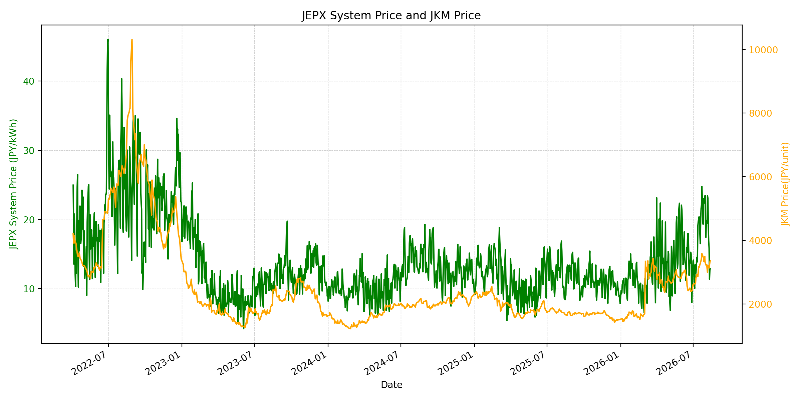
WTIの推移グラフ
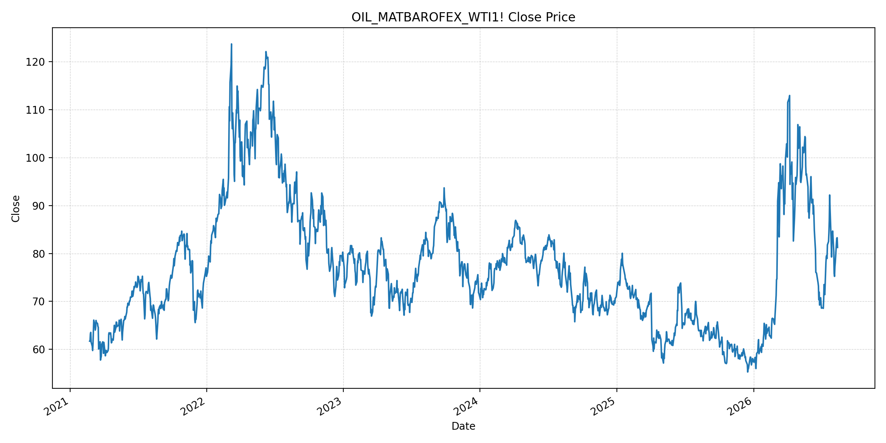
JEPXエリアプライスグラフ（直近一年分）
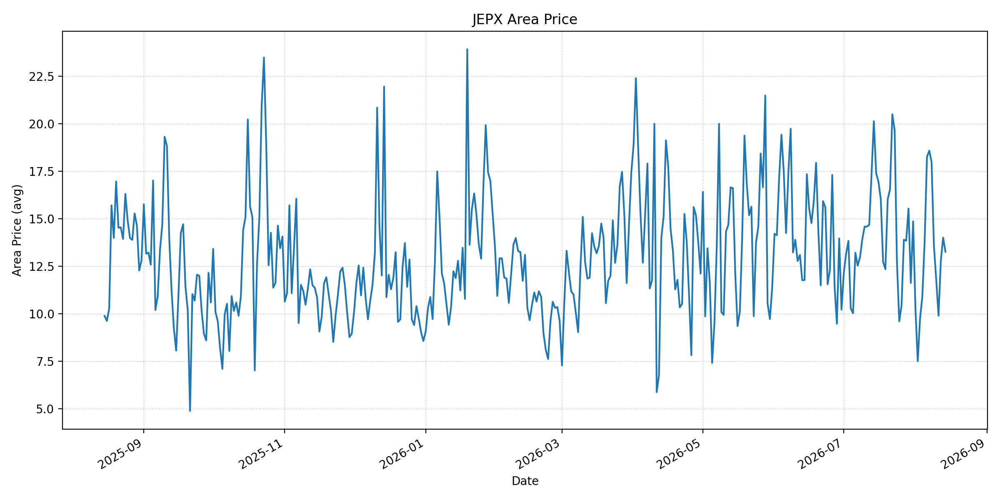
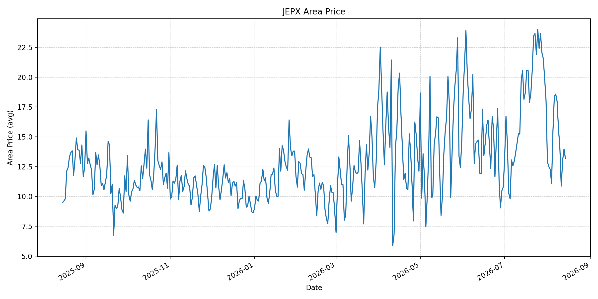
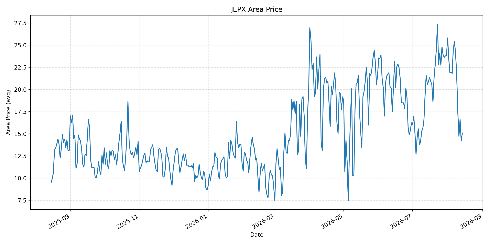
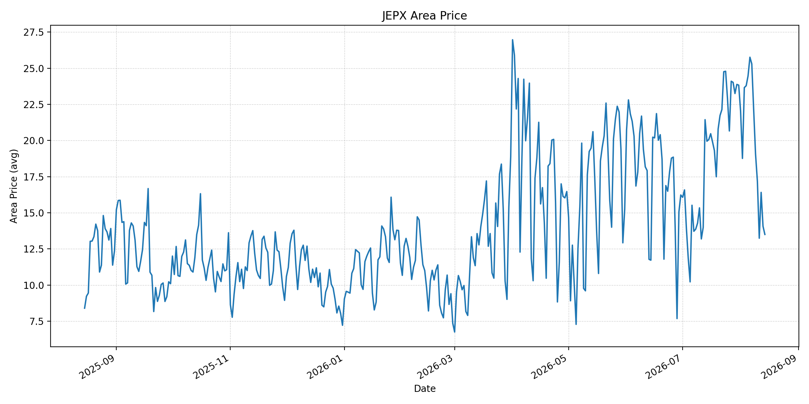
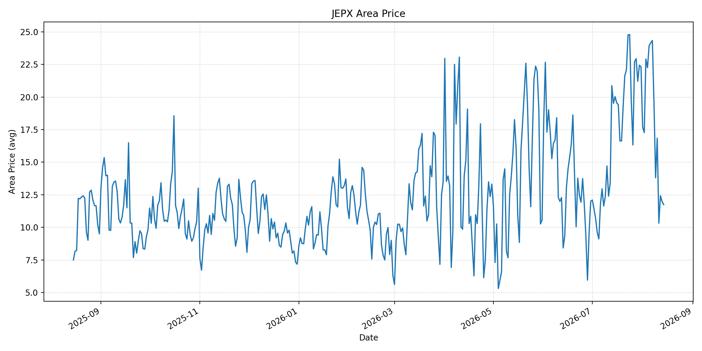
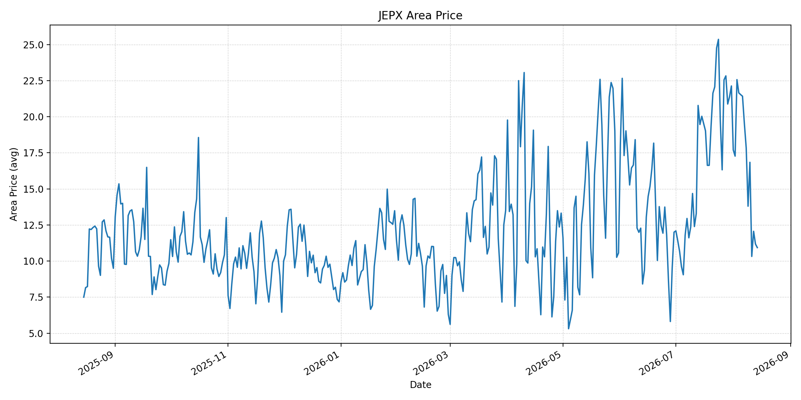
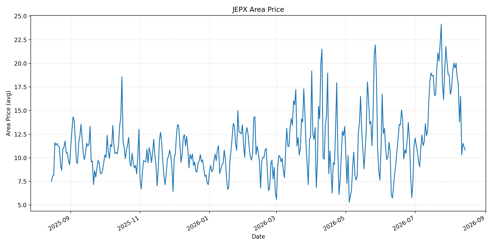
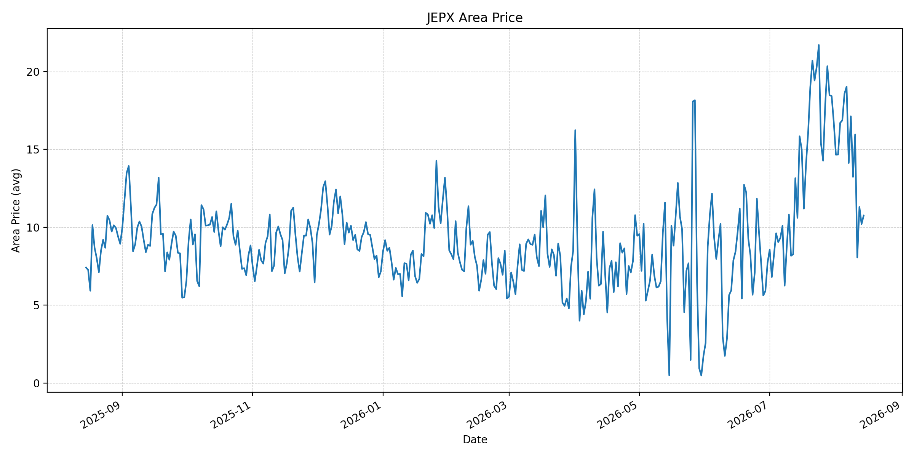
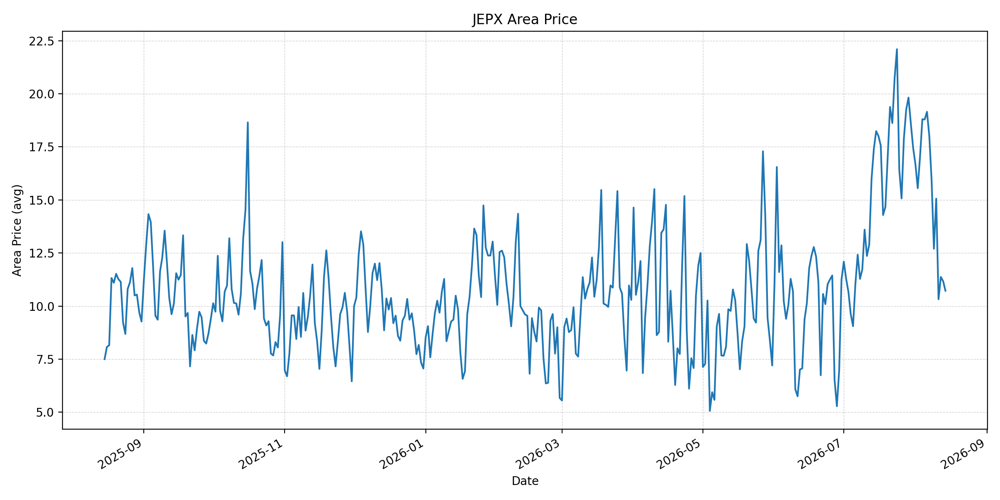
短期トレンド
JKMとJEPXシステムプライスの推移グラフ
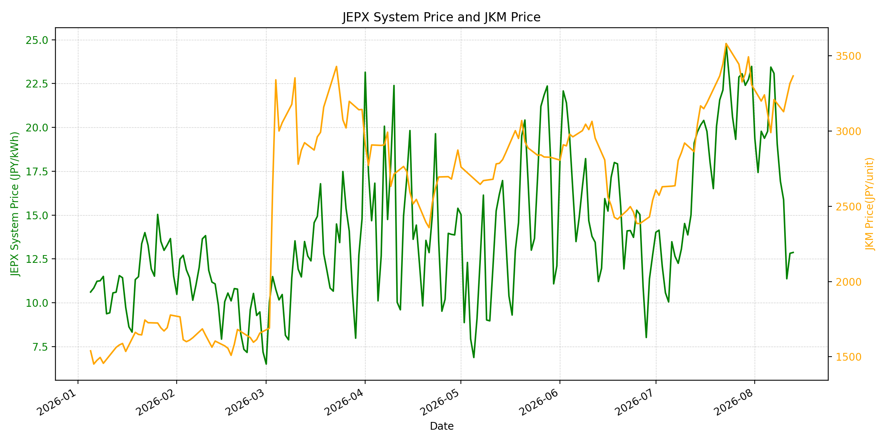
WTIの推移グラフ
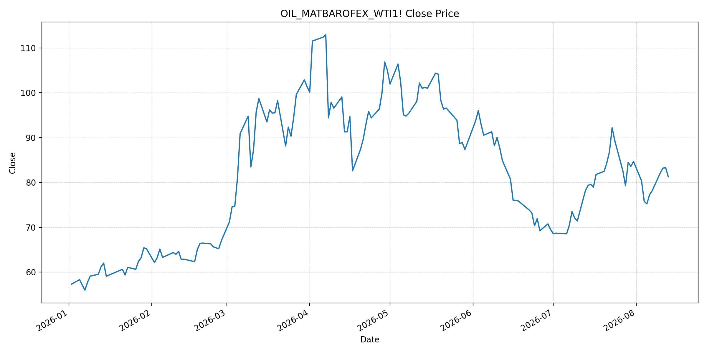
JEPXシステムプライス
JEPXは受渡日ベースの最新非空値で評価しています。最新値は 2026-08-14 分です。先週終値は 2026-08-07、先月終値は 2026-07-31 時点の直近値で評価しています。
| エリア | 当日価格 | 前日価格 | 前日比（％） | 先週終値 | 先週比（％） | 先月終値 | 先月比（％） | 過去最高値 | 最高値比（％） |
|---|---|---|---|---|---|---|---|---|---|
| システム | 12.45 | 12.87 | -3.26 | 23.08 | -46.06 | 23.48 | -46.98 | 64.06 | -80.57 |
| 北海道 | 13.26 | 14.00 | -5.29 | 18.58 | -28.63 | 14.86 | -10.77 | 73.92 | -82.06 |
| 東北 | 13.19 | 13.97 | -5.58 | 18.58 | -29.01 | 18.04 | -26.88 | 84.92 | -84.47 |
| 東京 | 15.09 | 14.19 | 6.34 | 25.40 | -40.59 | 23.85 | -36.73 | 86.13 | -82.48 |
| 中部 | 13.50 | 14.07 | -4.05 | 25.30 | -46.64 | 23.83 | -43.35 | 52.06 | -74.07 |
| 北陸 | 11.74 | 11.97 | -1.92 | 24.33 | -51.75 | 22.32 | -47.40 | 46.48 | -74.74 |
| 関西 | 10.93 | 11.18 | -2.24 | 19.54 | -44.06 | 22.13 | -50.61 | 46.48 | -76.49 |
| 中国 | 10.82 | 11.18 | -3.22 | 18.52 | -41.58 | 18.78 | -42.39 | 46.48 | -76.72 |
| 四国 | 10.76 | 10.21 | 5.39 | 14.13 | -23.85 | 16.74 | -35.72 | 46.48 | -76.85 |
| 九州 | 10.72 | 11.17 | -4.03 | 18.02 | -40.51 | 17.46 | -38.60 | 40.54 | -73.56 |
LNG先物価格
最新値は 2026-08-13 の LNG(close) です。前日価格は 2026-08-12、先週終値は 2026-08-06、先月終値は 2026-07-31 時点の直近値で評価しています。
| 当日価格 | 前日価格 | 前日比（％） | 先週終値 | 先週比（％） | 先月終値 | 先月比（％） | 過去最高値 | 最高値比（％） |
|---|---|---|---|---|---|---|---|---|
| 3367.00 | 3318.00 | 1.48 | 2990.00 | 12.61 | 3307.00 | 1.81 | 10319.00 | -67.37 |
石油先物価格
最新値は 2026-08-13 の OIL(close) です。前日価格は 2026-08-12、先週終値は 2026-08-06、先月終値は 2026-07-31 時点の直近値で評価しています。
| 当日価格 | 前日価格 | 前日比（％） | 先週終値 | 先週比（％） | 先月終値 | 先月比（％） | 過去最高値 | 最高値比（％） |
|---|---|---|---|---|---|---|---|---|
| 81.25 | 83.27 | -2.43 | 77.29 | 5.12 | 84.67 | -4.04 | 123.70 | -34.32 |
ニュース
イラン情勢に関するニュース
- 8月13日、フーシ派とイエメン政府軍の衝突が継続し、内戦再燃と中東情勢のさらなる不安定化が懸念されています。フーシ派はサウジ・アラムコ製油所へのドローン攻撃も主張しました。参照: AP, 2026-08-13
- 米国はホルムズ海峡の統制を主張する一方、イランは港湾封鎖解除などの要求が満たされるまで再開しない立場を維持しています。通航の正常化を左右する外交条件は未解決です。参照: AP, 2026-08-12
ホルムズ海峡経由の石油・LNGに関するニュース
- オマーン沖で座礁したロシア籍タンカーの油流出に対し、英国企業が回収・封じ込めを開始しました。APは、イラン沖でも紛争に起因するとされる油流出が発生していると報じており、事故対応は航路運用の追加的な負担です。参照: AP, 2026-08-13
- 米エネルギー長官は8月11日、ホルムズ海峡の原油通過量を日量約900万バレルと説明しました。供給圧力の緩和を示す材料ですが、船舶安全と航行継続性に不確実性が残ります。参照: AP, 2026-08-11
ホルムズ海峡経由でない石油・LNGに関するニュース
- フーシ派と政府軍の衝突、サウジの石油施設への攻撃主張が続き、紅海・バブエルマンデブ側の輸送安全も悪化しています。ホルムズ回避ルートの保険料と船腹費用を押し上げる要因です。参照: AP, 2026-08-13
- バブエルマンデブ海峡での商船攻撃では6人の死亡が報告されており、代替航路の安全性に対する懸念が継続しています。参照: AP, 2026-08-11
日本国内のイラン戦争に関係するニュース
- 過去24時間で、JEPX制度、国内電力需給ルール、または日本政府のイラン戦争関連対策を直接変更する主要な新規公表は確認できませんでした。
- 日本政府は、ホルムズの航行状況にかかわらず備蓄活用により2027年度末まで安定供給が可能との見通しを示しています。これは供給量の緩衝材ですが、調達・輸送コストの上昇を排除するものではありません。参照: METI, 2026-06-16
インサイト
ニュース事項による日本の電力市場への影響（短期：数日〜1週間）
- JEPXシステムプライスは 12.45 円/kWhで前日比 -3.26%、先週比 -46.06% です。東京のみ前日比 6.34%、四国 5.39% と上昇しましたが、他エリアは下落しており、国内需給は落ち着いています。
- LNGは 3367.00 で前日比 1.48%、先週比 12.61% と上昇し、WTIも先週比 5.12% 上昇しています。ホルムズの一部通航回復にもかかわらず、油流出事故、船舶安全、紅海側リスクが燃料プレミアムを支えています。
- 数日から1週間は、船舶事故・攻撃の報道に伴う燃料コスト上振れと、低いJEPX価格による下押しが併存しやすく、エリア間の価格差にも注意が必要です。
ニュース事項による日本の電力市場への影響（長期：1ヶ月〜半年）
- JEPXシステムは先月比 -46.98%、LNGは 1.81%、WTIは -4.04% です。ホルムズの通航量が持続的に回復すれば火力限界費用を抑える一方、航路管理と安全確保が進まなければ燃料費低下は限定的です。
- 日本の備蓄は供給量の緩衝材になりますが、紅海・オマーン沖を含む輸送の不安定化が長引けば、秋冬に向けたLNG補充コストに波及します。JEPXは先月比で東京 -36.73%、中部 -43.35%、関西 -50.61% と下落しており、地域需給による価格差は残ります。
- 過去最高値比ではシステム -80.57%、LNG -67.37%、WTI -34.32% です。1ヶ月から半年では、実通航量、紅海航路の安全、国内在庫の補充状況を分けて追うことが重要です。